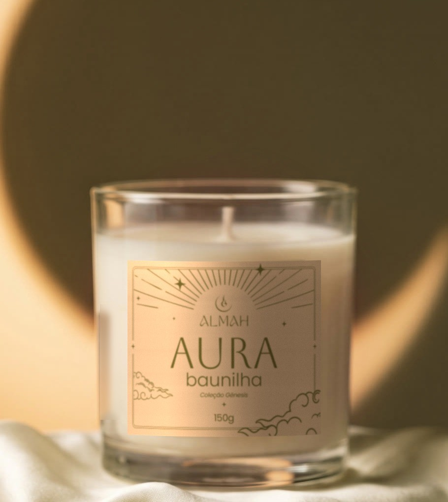
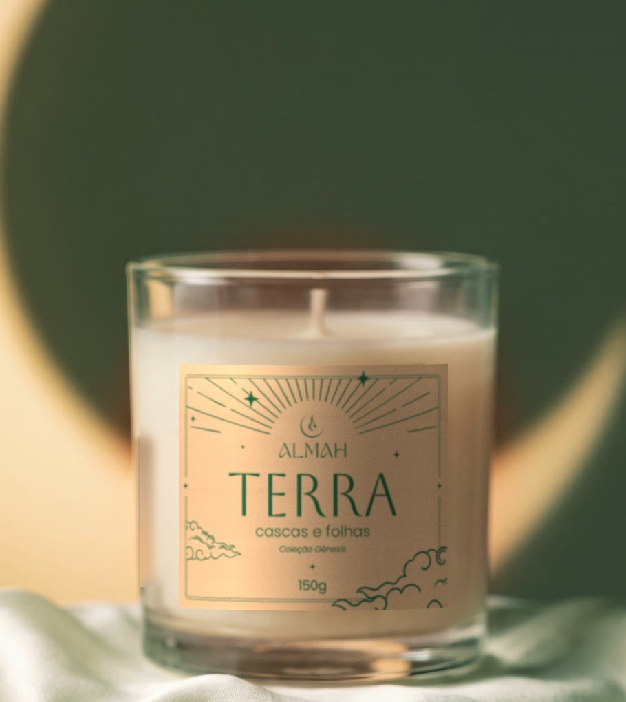
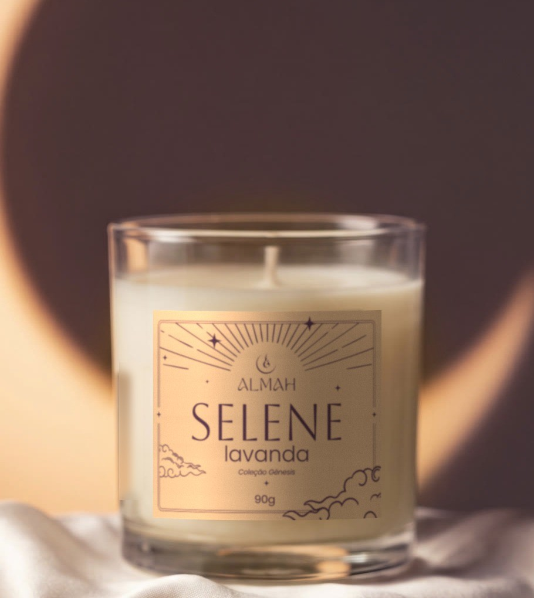
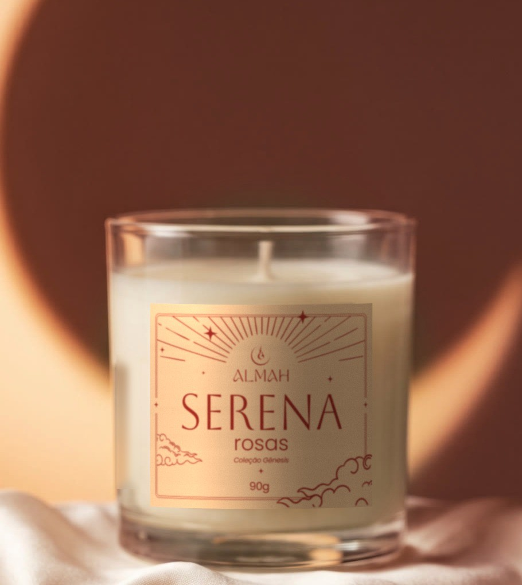
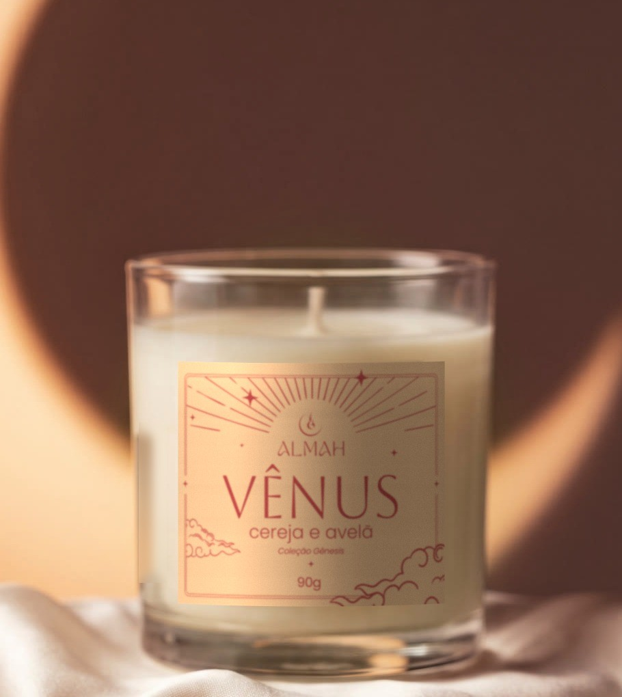
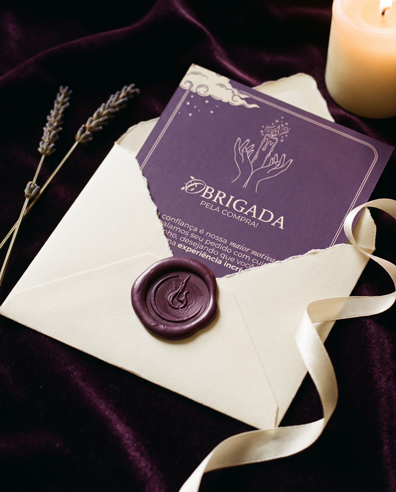

Uma luz que nasce dentro da lua.A light born inside the moon.
Almah é uma marca de velas aromáticas feitas à mão. O nome carrega a palavra alma; o símbolo junta uma lua crescente e uma chama. A primeira coleção, Gênesis, tem cinco velas, cada uma com um céu, um aroma e uma cor.
O símbolo nasceu à mão, no papel: uma lua crescente que abraça uma chama.Drawn by hand: a crescent moon holding a flame.
II
A construção
Do lápis ao vetor: dois círculos desenham a lua, um eixo guia a chama.From pencil to vector: two circles, one axis.
III
Gênesis
A primeira coleção: Aura, Terra, Selene, Serena e Vênus.The first collection: five candles, five skies.
IV
Seu pedido chegou
A caixa roxo-profundo chega amarrada e fechada com o adesivo da marca.Tied with twine, sealed with the brand sticker.
V
Abrir
Dentro, papel de seda, a vela e o card de agradecimento.Tissue paper, the candle and a thank-you card.
VI
Cuidar
Cada vela vai com um card de cuidados: cinco gestos para a chama durar.Five gestures to make the flame last.
Construção do símbolo
Dois círculos e um eixo
O desenho à mão foi redesenhado em vetor sem perder o gesto: a lua sai de dois círculos fora de centro, e a chama cresce sobre um eixo vertical, com a base num terceiro círculo.
Two off-center circles cut the moon; one vertical axis guides the flame.
R e rDois círculos fora de centro recortam a lua crescente.
EixoUma vertical guia a chama e a põe dentro da lua.
GotaA base da chama segue um terceiro círculo.
Cinco céus
Uma tinta só sobre papel creme. Cada rótulo tem a sua cor e o seu aroma, debaixo do mesmo céu: sol raiado, estrelas de quatro pontas e nuvens de traço oriental.
AURAbaunilha
TERRAcascas e folhas
SELENElavanda
SERENArosas
VÊNUScereja e avelã
Coleção Gênesis
Cinco velas
O mesmo copo de vidro, a mesma cera; muda o rótulo, o aroma e a cor de cada céu.

AURAbaunilha

TERRAcascas e folhas

SELENElavanda

SERENArosas

VÊNUScereja e avelã
Fotografia do produtoSerena, Aura e Selene com o rótulo impresso.Product photography, printed labels.
Embalagem
A caixa, aberta no plano
Caixa-correio numa peça só, roxo-profundo com o logo em creme. A marca aparece por fora, na tampa, e por dentro, para quem abre. O adesivo "Seu pedido chegou!" fecha a frente.
One-piece mailer box. The mark sits on the lid, outside and inside; the sticker seals the front.
cortedobralugar do adesivoNo plano, o logo da tampa fica de ponta-cabeça: com a caixa fechada, ele lê certo para quem está de frente.

Cores e letras
Roxo profundo, sempre
Tintas da coleçãoAura #6D712FTerra #167154Selene #503B6ASerena #9B2929Vênus #B55263
ALMAH
AboretoNomes e títulos curtos
Luz que acalma, aroma que abraça.
BuenardFrases e títulos
C
Fleur De LeahSó a capitular
Deixe a cera derreter até a borda na primeira queima para evitar túneis.
PoppinsTextos e informações
Obrigada
pela leitura, e por acender com a gente.
Identidade visualEmily e Cauã@itsemsdesign · @ohdorn
 AURAbaunilha
AURAbaunilha TERRAcascas e folhas
TERRAcascas e folhas SELENElavanda
SELENElavanda SERENArosas
SERENArosas VÊNUScereja e avelã
VÊNUScereja e avelã